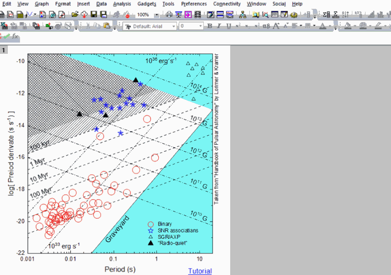

FAQ-1109 Wie erstelle ich benutzerdefinierte Symbole in Punktdiagrammen?
Create-User-Defined-Symbol
Letztes Update: 30.11.2021
Wenn Sie ein gewünschtes Symbol nicht in der Standardsymbolliste finden können (Dialog Details Zeichnung > Registerkarte Symbol), können Sie entweder Ihr eigenes Symbol mit anderen Werkzeugen erstellen oder das gewünschte Symbol online suchen und es dann in Origin verwenden.
Methode 1: Symbol in anderem Werkzeug erstellen und in Origin importieren
- Verwenden Sie eine andere Zeichensoftware, um Ihr Symbol zu erstellen.
- Speichern Sie es als *.SVG- oder *.BMP-Datei.

- Importieren Sie das benutzerdefinierte Symbol in Origin. Das heißt:
- Wählen Sie im Menü Einstellungen: Optionen.
- Auf der Registerkarte Grafik des Dialogs Optionen klicken Sie auf eine leere Zelle und drücken Strg+F, um den Dateibrowser zu öffnen. Navigieren Sie, um die gespeicherte Symboldatei auszuwählen.
- Klicken Sie auf OK, um den Dialog zu schließen.
- Jetzt können Sie dieses benutzerdefinierte Symbol von der Registerkarte Symbol im Dialog Details Zeichnung oder über die Schaltfläche Diagrammsymbol auf der Minisymbolleiste auswählen.

Methode 2: Symbol online suchen und in Origin verwenden
- Suchen Sie das gewünschte Symbol online.
- Klicken Sie mit der rechten Maustaste auf das Symbolbild und wählen Sie Bild kopieren im Kontextmenü.
- Kehren Sie zu Origin zurück. Klicken Sie zum Öffnen des Dialogs Details Zeichnung doppelt auf das Symboldiagramm.
- Aktivieren Sie auf der Registerkarte Symbol das Kontrollkästchen Benutzerdefinierte Konstruktion > Option Benutzerdefinierte Symbole. Das Feld Aus Zwischenablage hinzufügen zeigt das Symbolbild an, das Sie online kopiert haben. Klicken Sie, um dieses Symbol auszuwählen.
- Klicken Sie auf OK, um es auf die Zeichnung anzuwenden.
-

Schlüsselwörter:benutzerdefiniertes Symbol, SVG-Symbol, benutzerdefiniertes Symbol